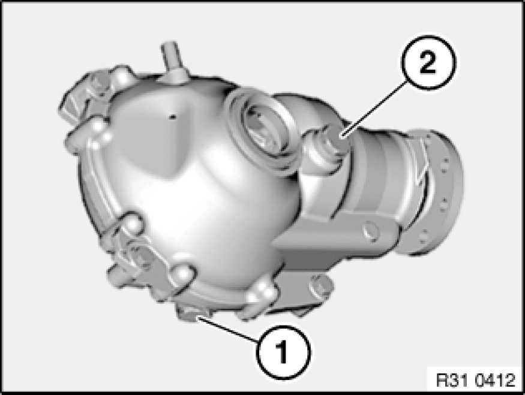

Changing Front Differential Oil
31 50 ... - Changing front differential oil

Important!
Use only the approved front differential oil in this front differential.
Failure to comply with this requirement will result in serious damage to the differential!
Note:
Only change oil when front differential is at normal operating temperature.

Necessary preliminary tasks:
- Remove reinforcement plate Service and Repair
Checking/correcting front differential oil level:
Undo oil filler plug (1).
Check front differential oil level.
If necessary, pour in front differential oil up to lower edge of opening for oil filler plug (1).
Installation Note:
Replace sealing ring.
Tightening torque 31 50 8AZ 31 50 Front Axle Differential.

Changing front differential oil:
Place oil collecting apparatus underneath.
Remove oil drain plug (1).
Drain front differential oil.
Replace sealing ring, screw in oil drain plug (1) and tighten down.
Tightening torque 31 50 8AZ 31 50 Front Axle Differential.
Undo oil filler plug (2).
Pour in front differential oil up to lower edge of opening for oil filler plug (2).
Installation Note:
Replace sealing ring.
Tightening torque 31 50 8AZ 31 50 Front Axle Differential.